Hospital Information Retrieval System (скорочено HiRS) — це внутрішня база документів. Застосунок робить дві речі водночас: зберігає документи у впорядкованій структурі папок і дозволяє ставити запитання про їхній зміст звичайною мовою, так само, як ми запитали б колегу, який ці документи знає.
Різниця порівняно зі звичайним мережевим диском є засадничою. На диску треба знати, у якому файлі шукати. Тут достатньо запитати «які правила дистанційної роботи?», і застосунок сам знайде потрібні фрагменти документів, складе з них відповідь і покаже, з яких документів походить кожне речення.
Застосунок відповідає на два різні види запитань і має для них два окремі екрани. Чат зі ШІ відповідає на запитання про зміст — «з якого віку дитини належить доплата?». Пошук відповідає на запитання про структуру — «покажи всі розпорядження з 2023 року». Поділ є навмисним: завдяки ньому не треба вгадувати, у яке поле вписати запитання.
Кожен документ проходить автоматичну обробку. Застосунок зчитує його зміст (також із таблиць), ділить на фрагменти, розпізнає вид документа — розпорядження, процедуру, заяву — і витягає з нього описові поля, наприклад номер, дату чи особу, яка затвердила. Тільки після цього документ стає видимим для пошуку та для чату.
Обробка одного документа триває зазвичай від кількох десятків секунд до кількох хвилин — залежно від його обсягу та від того, чи це текстовий файл, чи скан, який потребує розпізнавання тексту. Увесь цей час документ має стан У черзі або Обробка.
Увесь застосунок разом із мовною моделлю працює на сервері, що належить лікарні. Ані зміст документів, ані поставлені запитання цього сервера не залишають і не надсилаються до жодної зовнішньої служби. Доступ до документів випливає з прав, наданих ролі, до якої належить обліковий запис — користувач бачить лише ті папки, які йому відкрито.
Застосунок відкриваємо у браузері за адресою, яку подав адміністратор. Над формою розміщено знак примірника — піктограму й назву. Входимо за адресою електронної пошти та паролем, отриманим від адміністратора; регістр літер в адресі не має значення.
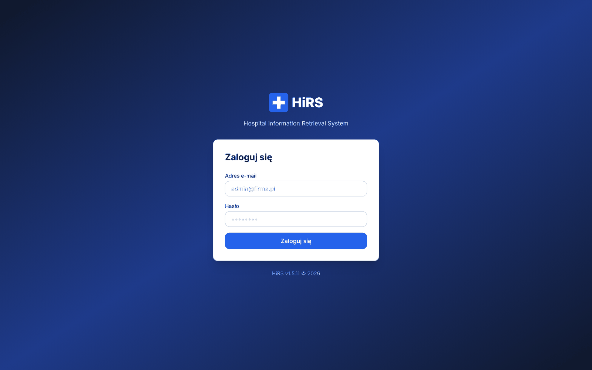
Після входу екран ділиться на дві частини. Ліворуч розміщено темно-синє меню, праворуч — зміст обраної сторінки. У правому верхньому куті видно ім'я та прізвище, а також кружечок з ініціалами, який розгортає меню користувача. Унизу бічного меню стоїть номер версії застосунку — він є посиланням на історію змін — та відомості про виробника.
Клацання на знаку примірника вгорі меню згортає його до самих піктограм, залишаючи більше місця для змісту. Повторне клацання розгортає меню назад. Вибір запам'ятовується між сеансами, тож раз згорнуте меню лишиться згорнутим і після наступного входу.
Нижче проходить лінія з написом АДМІНІСТРУВАННЯ, а під нею частина, видима лише адміністраторові: Користувачі, Список доступів, Схеми документів, Черга файлів, Журнал відповідей та Налаштування. Ті самі пункти з'являються додатково як смуга вкладок угорі кожного адміністративного екрана.
Унизу меню є ще плитка Потрібна допомога? з кнопкою Зв'яжіться з нами — вона веде до форми звернення до технічної підтримки (див. окремий розділ). Коли меню не вміщається на низькому екрані, прокручується сам перелік пунктів; плитка допомоги та підвал лишаються на своєму місці.
Огляд — це початковий екран. Він показує стан бази документів у числах і графіках, і все на ньому стосується обраного проміжку часу — випадного списку в правому верхньому куті з варіантами 7, 30 і 90 днів. Один вибір діє на весь екран, тож плитки й графіки завжди говорять про той самий період.
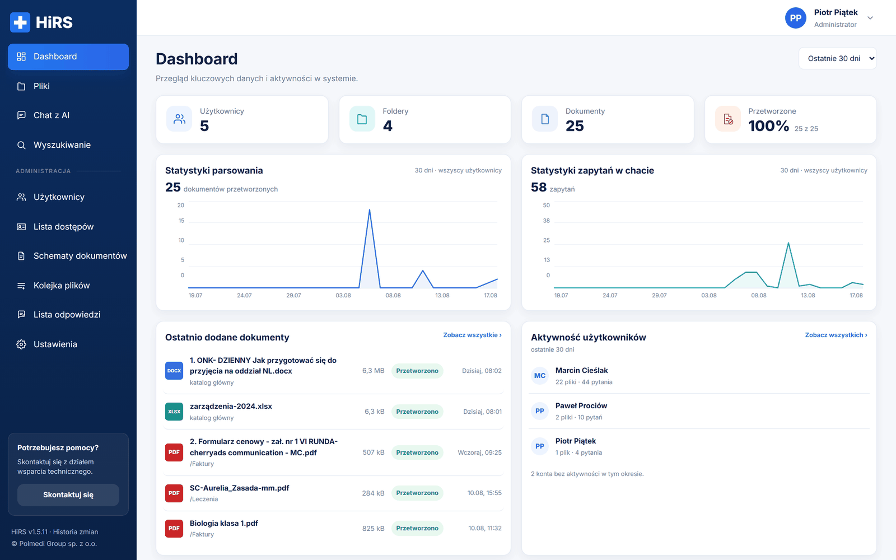
Чотири плитки подають кількість облікових записів, папок і документів та частку оброблених документів. Під числом буває другий рядок із порівнянням до попереднього періоду, наприклад ↑ 12,6 % щодо попередніх 30 днів.
Два графіки показують денну активність: кількість оброблених документів і кількість запитань, поставлених чату. Наведення курсора показує точне значення за конкретний день.
Дві панелі під графіками показують п'ять останніх завантажених документів та зведення активності облікових записів в обраному періоді — скільки хтось завантажив файлів і скільки поставив запитань. Облікові записи без жодної активності списку не засмічують; їхню кількість подано нижче.
Нижній ряд — це три панелі. Швидкі дії ведуть просто до найчастіших дій. Місце в системі показує заповнення диска сервера — увага: усього диска, спільного з іншими службами, тому нижче окремо подано обсяг самих документів. Стан системи каже, чи працюють застосунок, база даних, парсер документів і сховище файлів.
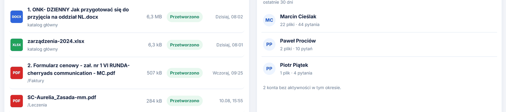
Кружечок з ініціалами в правому верхньому куті розгортає меню з трьома пунктами: Профіль, Посібник користувача та Вийти. Меню закривається клавішею Escape або клацанням поруч.
Сторінка Профіль показує дані облікового запису: показану назву, ім'я та прізвище, адресу електронної пошти, призначену роль, стан облікового запису та дату останнього входу.
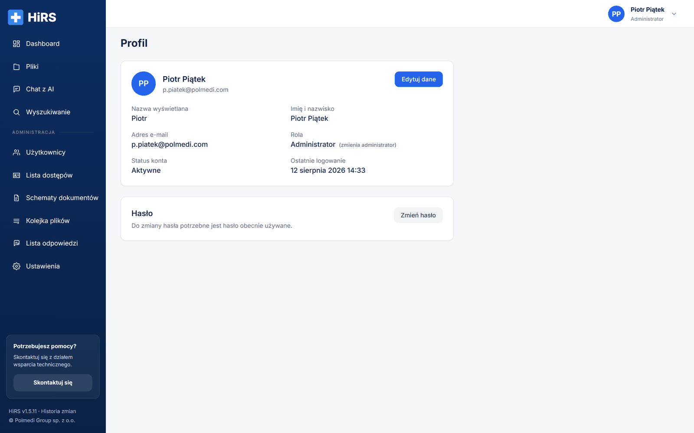
Кнопка Редагувати дані перетворює три перші пункти на поля форми. Зберігаємо кнопкою Зберегти, відступаємо кнопкою Скасувати.
Пароль змінюємо на окремій картці Пароль кнопкою Змінити пароль. Форма просить пароль, що використовується зараз, та дворазове введення нового. Новий пароль мусить мати щонайменше вісім символів і відрізнятися від попереднього.
Після вдалої зміни застосунок виходить із системи й показує екран входу — це навмисно: одразу перевіряємо, що новий пароль працює.
Пункт Посібник користувача відкриває сторінку Допомога з цим документом просто в застосунку, без пошуку файлу на диску. Угорі сторінки є дві кнопки: Відкрити в новій вкладці та Завантажити PDF. Адміністратор бачить повне видання, решта облікових записів — видання для користувача, що описує лише екрани, до яких вони мають доступ.
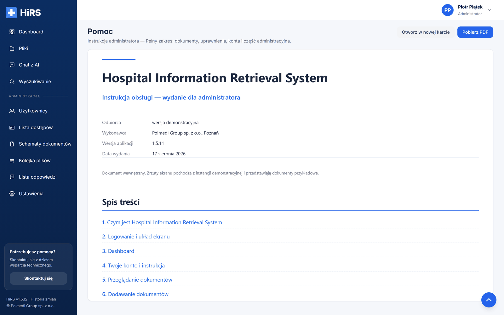
Екран Файли — це провідник документів. Угорі проходить шлях навігації, що починається з Кореневої папки — клацання будь-якого його елемента повертає на цей рівень. Нижче є дві картки: Папки і Файли.
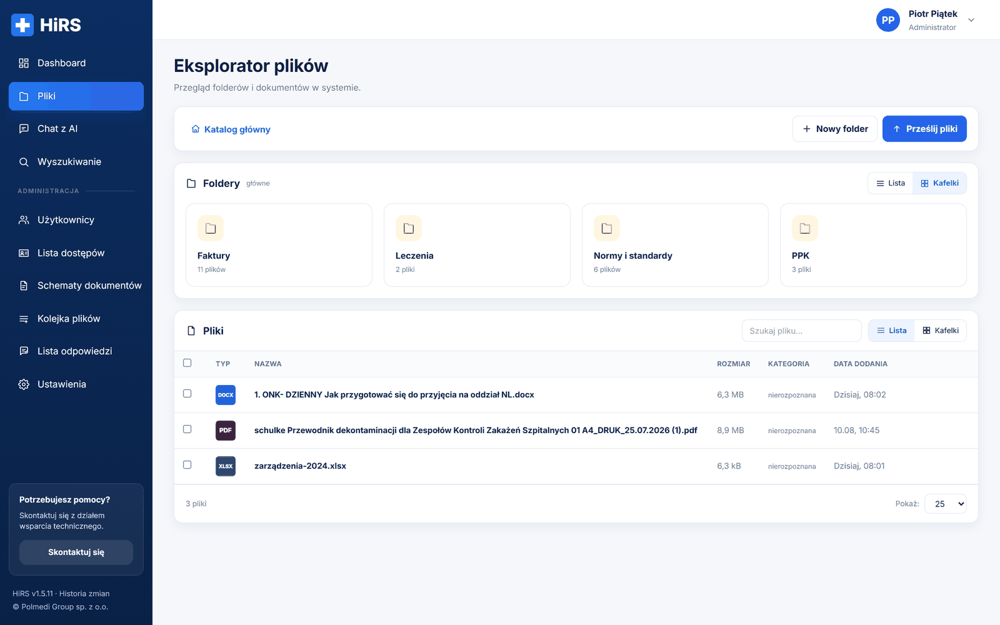
Як папки, так і файли можна переглядати у вигляді списку або плиток — перемикач розміщено в заголовку кожної з карток, а вибір є незалежним для папок і для файлів. Список вміщає більше відомостей за одним поглядом, плитки зручніші, коли шукаємо документ «за зоровою пам'яттю».
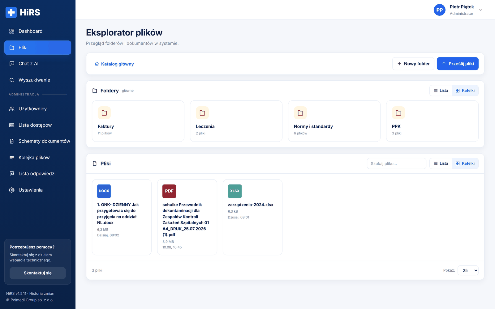
Перелік файлів показує тип файлу, назву, розмір, категорію, розпізнану застосунком, і дату додавання. Категорія — це вид документа: розпорядження, процедура, заява — і саме вона найчастіше допомагає знайти потрібний файл. Документи, яких застосунок не зарахував до жодної категорії, мають у цьому стовпці напис невизначена.
Поле Шукати файл над переліком фільтрує документи за назвою в межах поточної папки. Під переліком стоїть кількість документів і вибір, скільки позицій показувати на сторінці (10, 25, 50 або 100).
Клацання рядка відкриває вікно з подробицями: тип файлу, розмір, стан обробки, дату додавання, папку, обліковий запис, який завантажив документ, і розпізнану категорію. З цього вікна документ можна завантажити, а файли PDF також переглянути в новій вкладці.
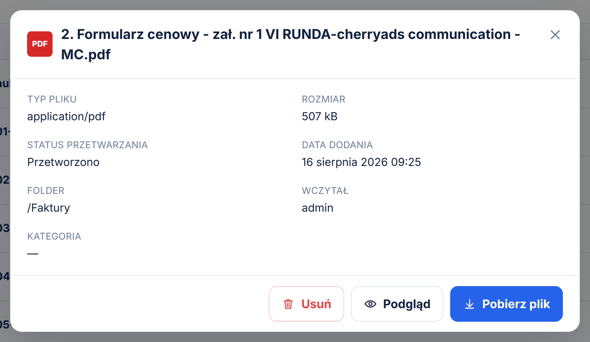
Документи додаємо кнопкою Надіслати файли в правому верхньому куті сторінки Файли. Вони потрапляють до папки, яка відкрита в цю мить — тому спершу заходимо до потрібної папки і лише потім завантажуємо. Цільову папку завжди виписано у вікні надсилання.
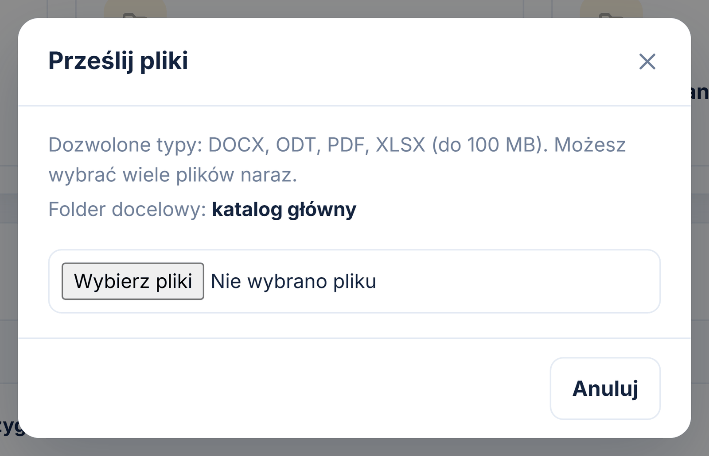
Можна позначити кілька файлів водночас. Застосунок показує тоді поступ окремо для кожного з них, а наприкінці підсумок: скільки файлів завантажено і скільки завершилося помилкою.
Застосунок приймає файли PDF, DOCX, ODT і XLSX, кожен розміром до 100 МБ. Перелік форматів видно у вікні надсилання і походить просто з налаштувань застосунку — якщо адміністратор його змінить, вікно покаже новий перелік, а системне вікно вибору файлу відфільтрує решту розширень.
Тримати збірку документів у порядку — завдання адміністратора. Усі описані нижче дії виконуються на екрані Файли.
Кнопка Нова папка створює підпапку в місці, де ми зараз перебуваємо. Вікно показує, які права нова папка успадкує від батьківської папки — це оглядове подання, права змінюються згодом піктограмою замка.
Піктограма олівця на плитці папки (видима після наведення) змінює її назву. Зміна охоплює шлях цієї папки та всіх її підпапок; файли та права лишаються призначеними без змін.
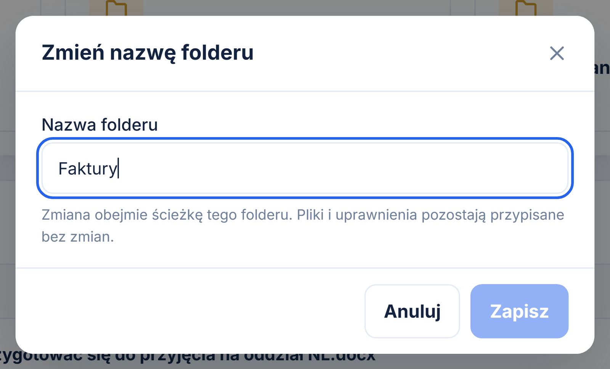
Окремий документ переміщується піктограмою папки зі стрілкою в його рядку. Перелік цільових папок укладено за абеткою і містить лише ті, у яких ми маємо право запису.
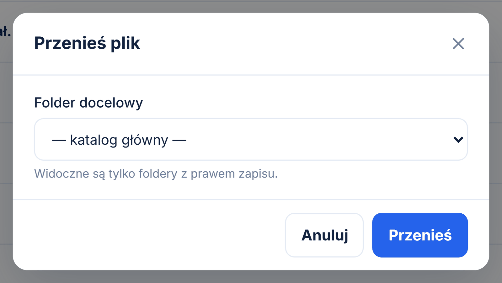
Позначення документів прапорцями ліворуч відкриває кнопку Виконати дію для вибраних із двома можливостями: Перемістити в іншу папку та Надати назви, що відповідають категорії (описано в розділі про розпізнавання документів). Прапорець у заголовку позначає документи з поточної сторінки, а не весь перелік.
Піктограма кошика видаляє документ разом із його фрагментами в базі знань — після видалення він перестає з'являтися у відповідях чату. Видалення папки переносить її документи до кореневої папки, тож разом із папкою нічого не пропадає.
Доступ до документів випливає з ролі, до якої належить обліковий запис, і з прав, наданих цій ролі на папках. Права не надаються окремим особам — завдяки цьому при зміні посади досить змінити роль облікового запису, замість виправляти десятки папок.
Право, надане папці, охоплює також її підпапки. У вікні прав успадковані позиції описано як (успадковано з батьківської папки) і видалити їх там не можна — вони змінюються на батьківській папці. На підпапці доступ можна лише розширити, наприклад підняти Читання до Запису.
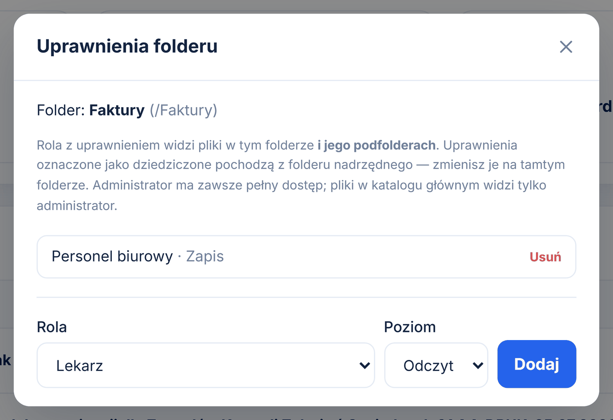
Ролі визначаються на екрані Список доступів кнопкою Додати роль. Роль можна також перейменувати та видалити. Варто знати три правила, яких застосунок дотримується:
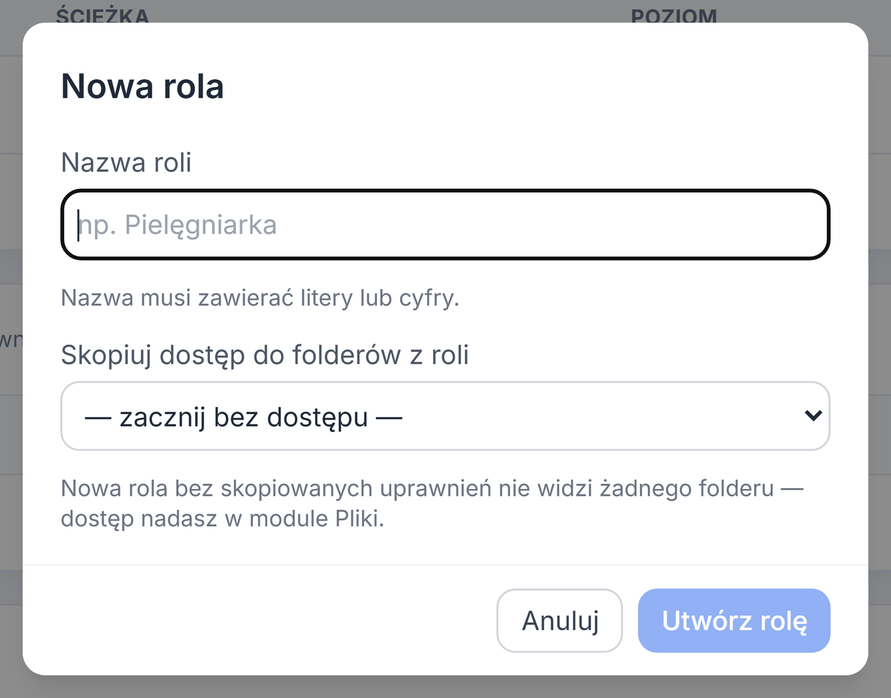
Екран Список доступів показує зведення всіх ролей і папок в одному місці, тож на ньому одразу видно, хто що бачить. Клацання папки веде просто до неї у провіднику.
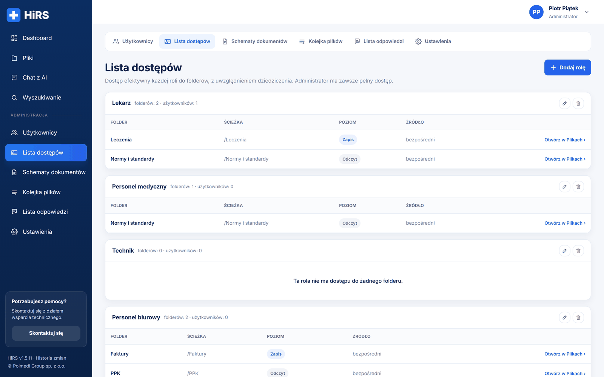
Екран Чат зі ШІ — це місце, де ставимо запитання про зміст документів. Він ділиться на три частини: перелік попередніх розмов ліворуч, вікно розмови посередині та посилання на пошук праворуч.
Запитання вписуємо в поле внизу й підтверджуємо клавішею Enter; Shift+Enter переходить на новий рядок. Відповідь з'являється поступово, слово за словом — її можна перервати кнопкою Зупинити.
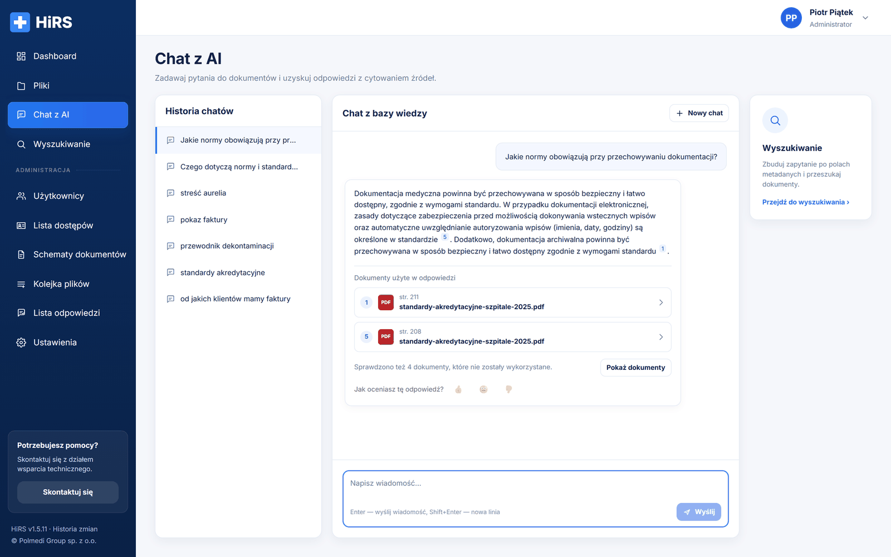
Під кожною відповіддю стоїть перелік документів, використаних у відповіді. Кожна позиція подає номер посилання, тип файлу, категорію документа, сторінку та назву файлу; клацання відкриває документ-джерело. Номери в позначках відповідають посиланням у тексті відповіді, тож видно, яке речення звідки походить.
Нижче буває ще відомість на кшталт Також перевірено 7 документів, які не були використані разом із кнопкою, що розгортає їхній перелік. Це документи, які застосунок переглянув, шукаючи відповідь, але нічого на тему в них не знайшов — варто туди зазирнути, коли відповідь видається неповною.
Застосунок відповідає виключно на підставі завантажених документів. Якщо він не знайде відомостей, напише про це прямо, замість вигадувати. Відповідь «у документах не знайдено відомостей на цю тему» є тому відомістю про збірку документів, а не несправністю.
Запитання на кшталт «покажи всі розпорядження з 2023 року» застосунок розпізнає як прохання про перелік, а не про відповідь зі змісту. Він відповідає тоді реченням «Знайшов N документів», переліком цих документів і кнопкою Завантажити цей список у файлі XLSX.
Кожна розмова зберігається в переліку ліворуч, і до неї можна повернутися. Кнопка Новий чат починає розмову начисто. Це має значення: у межах однієї розмови застосунок бере до уваги попередні запитання, тож при зміні теми краще почати нову.
Під відповіддю з'являється прохання про оцінку. Оцінки потрапляють на екран Журнал відповідей в адміністративній частині і служать для поліпшення якості роботи — варто заохотити користувачів, щоб ним користувалися.
↑ ЗмістПошук — це окремий екран у меню. Він відповідає на запитання про структуру збірки: «усі розпорядження з 2023 року», «заяви, підписані конкретною особою». Чат відповідає на запитання про зміст — ці два шляхи навмисно не змішано.
Найпростіше вписати запитання звичайною мовою в поле вгорі. Курсор стоїть у ньому одразу після входу на екран. Застосунок розпізнає із запитання вид документа та умови, заповнює ними форму нижче й одразу показує результати. Розпізнаний фільтр можна потім виправити вручну й шукати повторно.
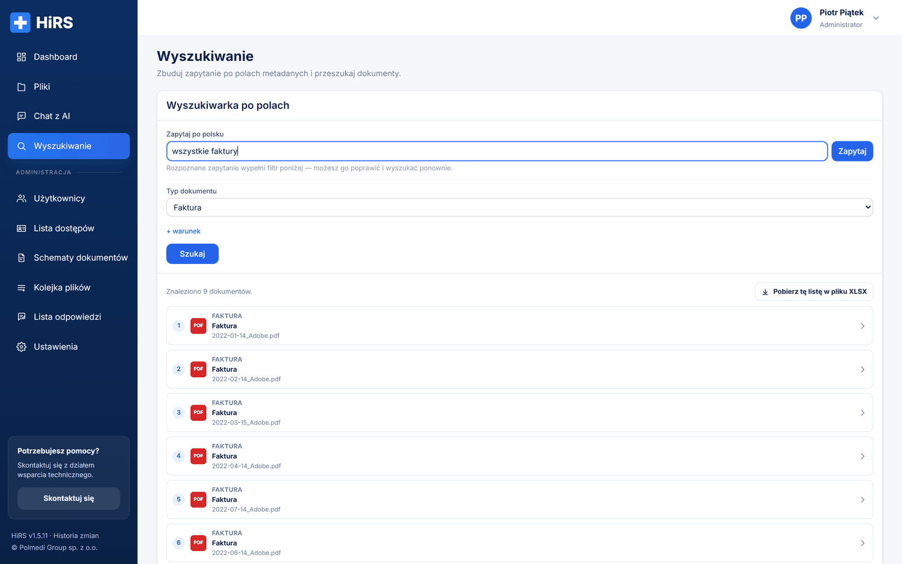
Форма складається з виду документа та довільної кількості умов. Умова — це описове поле, оператор (містить, дорівнює, від, до, після, перед) і значення. Перелік доступних полів залежить від обраного виду документа — він походить просто зі схем документів.
Результати виглядають так само, як перелік документів під відповіддю чату: номер, тип файлу, категорія, назва документа та назва файлу. Клацання відкриває документ. Над переліком є кнопка Завантажити цей список у файлі XLSX — аркуш містить повний набір описових полів, зі стовпцями в порядку, встановленому у схемі документа.
Адміністративна частина лежить у меню під лінією АДМІНІСТРУВАННЯ і видима виключно обліковим записам адміністратора. Ті самі пункти повторює смуга вкладок угорі кожного з цих екранів.
Створення облікових записів, зміна ролі, деактивація та скидання пароля. Обліковий запис входить за адресою електронної пошти; показана назва служить лише для відображення в інтерфейсі й може повторюватися.
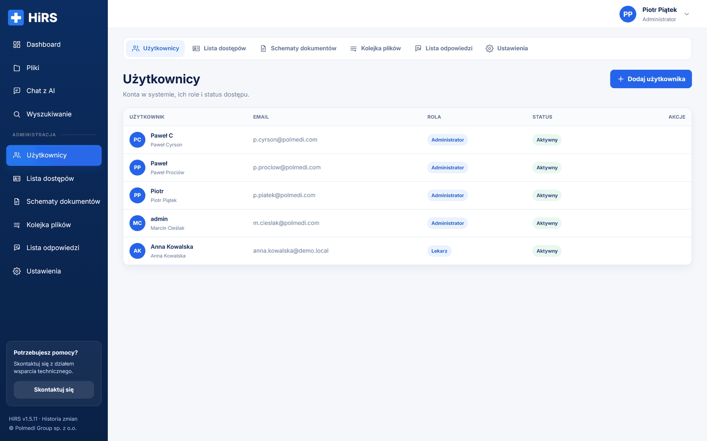
Зведення прав усіх ролей та керування самими ролями — описано в розділі про права доступу.
Види документів разом з описовими полями, критеріями розпізнавання та шаблоном назви файлу. Це екран, який найсильніше впливає на якість роботи пошуку — описаний у розділі про розпізнавання документів.
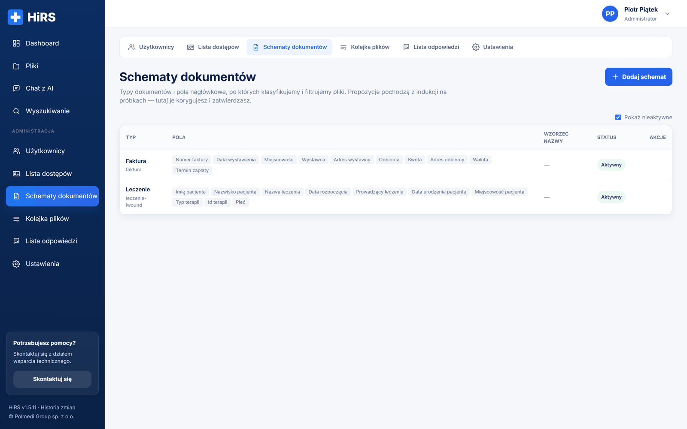
Огляд обробки: що чекає, що триває, що не вдалося. Тут видно розпізнаний вид документа та витягнуті поля, тож це перше місце, до якого варто зазирнути, коли документ не з'являється в результатах.
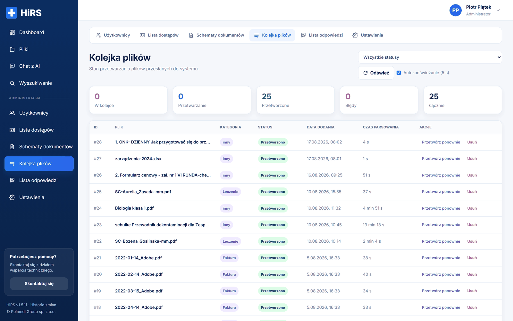
Оцінки, виставлені відповідям чату, разом із запитанням, відповіддю та вказаними документами. Служить для вилову запитань, на які застосунок відповідає погано — кожна така позиція є підказкою, якого документа бракує або яка схема потребує виправлення.
Екран ділиться на три частини.
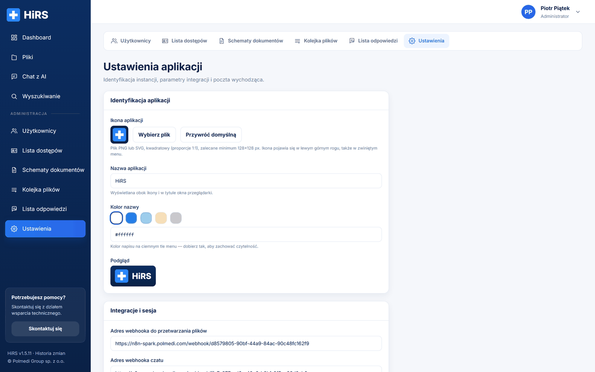
Номер версії внизу бічного меню веде до переліку змін у наступних виданнях застосунку. Ця сторінка доступна всім, хто увійшов до системи.
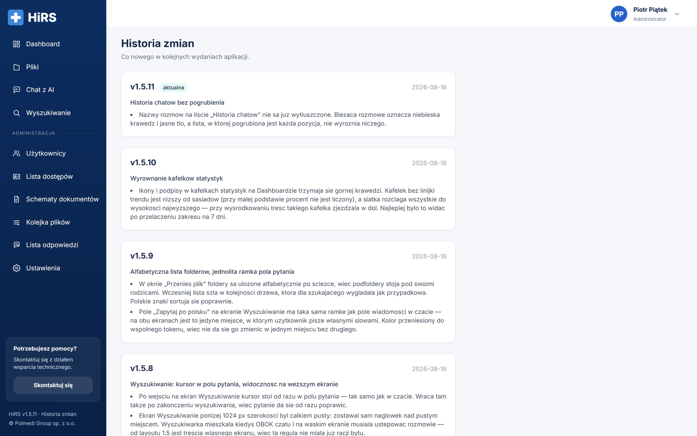
Після завантаження документа застосунок намагається встановити, чим він є, і витягти з нього описові поля. Робить це на підставі схем документів — визначень видів документів, які адміністратор задає на окремому екрані.
Кожне поле має тип: Текст, Дата, Число, Сума або Список значень. Тип не є оздобою — він вирішує, що з полем можна зробити. Дати дозволяють фільтрувати за проміжками, а суми потрапляють до аркуша як числа з копійками, тож стовпець підсумовується (також тоді, коли в документі її записано як «1 234,56 zł»).
Кожен вид документа може мати шаблон назви файлу, наприклад {вид}-номер-{номер_документа}-{дата}. Застосунок пропонує тоді назви, що відповідають змісту документа, замість «скан_0001.pdf». Порожній шаблон означає, що для цієї категорії назв не пропонуємо.
Назви надаються партіями: на екрані Файли позначаємо документи й обираємо Виконати дію для вибраних → Надати назви, що відповідають категорії. Вікно показує спершу зведення стара назва → нова; кожну позицію можна виправити вручну або зняти з неї позначку. Нічого не відбувається без цього перегляду.
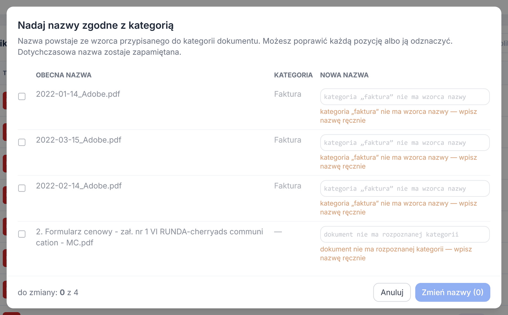
Дотеперішня назва запам'ятовується і видима в подробицях документа, тож зміну можна відтворити, а документ лишається впізнаваним для того, хто пам'ятає його під старою назвою.
Документ, якого застосунок не зарахував до жодного виду, має категорію невизначена. Він і надалі доступний для пошуку через чат — не знайдеться натомість у пошуку, що фільтрує за полями. Найчастіші причини — скан низької якості або відсутність схеми, що описує цей вид документа.
Плитка Потрібна допомога? внизу бічного меню веде до форми звернення до технічної підтримки. Досить описати справу й надіслати — відправника та примірник додано автоматично, а відповідь потрапить на адресу електронної пошти, призначену обліковому запису.
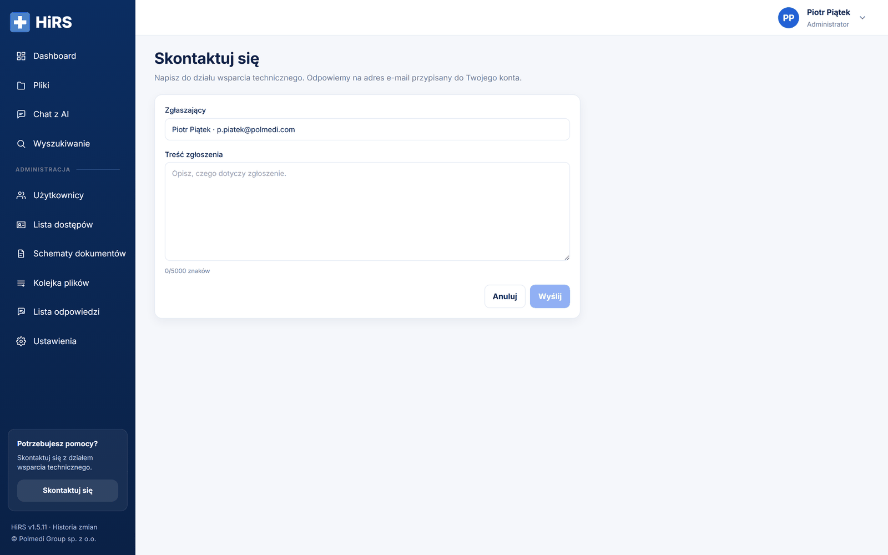
Звернення йде поштою, а не через механізм обробки документів. Це навмисно: збій обробки не може відрізати шляху повідомлення про проблему, бо саме тоді повідомлення потрібні найбільше.
Цей примірник є демонстраційною версією, що працює на зразкових документах. Поза тим це точно той самий застосунок, що й клієнтські впровадження. Наведені нижче обмеження відомі й заплановані до усунення.
Кожну зміну описано в Історії змін, доступній з рівня застосунку, з-під номера версії внизу меню.
↑ ЗмістНижче найчастіші ситуації, про які повідомляють при першому контакті із застосунком.
| Ситуація | Що зробити |
|---|---|
| Я завантажив документ, але чат його не знає. | Перевірити стан у переліку файлів. Доки не буде Оброблено, документ у пошуку не бере участі. Для довгих документів обробка триває кілька хвилин. |
| Чат відповідає, що не знайшов відомостей. | Найчастіше запитання стосується документа, якого немає в базі, або документ ще не оброблено. Варто також поставити запитання інакше — повним реченням. |
| Я не бачу папки, про яку каже колега. | Папки відкриваються ролям. Якщо доступу бракує, слід попросити адміністратора надати право до цієї папки. |
| Застосунок вивів мене із системи сам. | Після періоду бездіяльності, встановленого адміністратором, сеанс спливає. Досить увійти ще раз. |
| Не можу завантажити файл — вікно вибору його не показує. | Застосунок приймає формати PDF, DOCX, ODT і XLSX. Файли в інших форматах треба спершу зберегти в одному з них. |
| Не можу увійти за іменем користувача. | Для входу служить виключно адреса електронної пошти, призначена обліковому запису. Ім'я користувача є лише показаною назвою. |
| Я забув пароль. | Новий пароль встановлює адміністратор у модулі Користувачі. Після входу варто змінити його на власний на сторінці Профіль. |
| Де я знайду цей посібник у застосунку? | Під кружечком з ініціалами в правому верхньому куті, пункт Допомога. Звідти його можна також завантажити як PDF. |
| Документ розпізнано як неправильний вид. | У Черзі файлів можна вручну вказати правильний вид; застосунок одразу витягне поля наново. |
| Новий працівник не бачить жодних документів. | Обліковий запис має роль, але роль поки що не має прав до папок. Права надаються у поданні Файли, піктограмою ключа біля папки. |
| Хочу додати новий вид документа з власними полями. | Для цього служить сторінка Схеми документів в Адмініструванні. |
| Поняття | Значення |
|---|---|
| Чат зі ШІ | Екран, на якому ставимо запитання про зміст документів. |
| Пошук | Екран, на якому фільтруємо документи за описовими полями. |
| Чат | Розмова із застосунком, що ведеться звичайною мовою. |
| Фрагмент (chunk) | Шматок документа — одиниця, на які застосунок ділить зміст, щоб точно вказувати джерело відповіді. |
| Парсинг | Зчитування змісту документа та підготовка його до пошуку. |
| Описове поле | Відомості, що описують документ — номер, дата, особа, яка затвердила. |
| Вид документа | Категорія, розпізнана автоматично: розпорядження, процедура, заява та інші. |
| Роль | Група прав, призначена обліковому запису — папки відкриваються ролям, а не особам. |
| Джерело | Документ і сторінка, з яких походить даний фрагмент відповіді. |